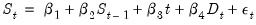
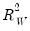
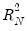

|
|
|
 and  goodness-of-fit and adjusted measures, along which indicate that the model accounts for roughly 60-90% of the variation in the constant-only model. The  statistic of 202.906 and corresponding p-value of 0.00 indicate strong rejection of the null hypothesis that all non-intercept coefficients are equal to zero. Lastly, the output shows the value of the deviance, information criteria, and the estimated scale. These measures may be of use when comparing models. See “M-estimator summary statistics” for formulae and discussion.
Next, we estimate the equation using MM-estimation. In the Specification tab:
 is the salinity level,
is the salinity level,  is discharge and
is discharge and  represents a time trend.
represents a time trend. statistic and test results are quite similar.
statistic and test results are quite similar.